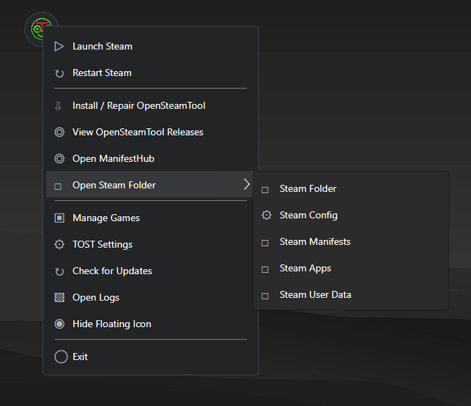

Drag and drop
Drop supported files, folders, or ZIP packages onto the floating icon.
Open-source installer for OpenSteamTool
A compact floating installer that routes supported OpenSteamTool files to the correct Steam folders.

Setup is recommended for automatic updates. Portable keeps the application and its data together in one folder.
TOST favors inspectable code, explicit local file selection, and visible changes instead of unverifiable security promises.
| Feature | TOST + OpenSteamTool | Original SteamTools |
|---|---|---|
| Code | Public source under GPL-3.0 | No public source linked from official downloads |
| Packages | Local files explicitly selected or dropped by the user | Handling cannot be verified from public source |
| File changes | Recognized names, optional backups, summaries, and logs | No comparable source-level verification available |
| Updates | GitHub checks can be disabled; downloads need confirmation | Implementation cannot be independently audited |
| Builds | Setup and Portable published with source on GitHub | Setup and Portable binaries |
Closed source does not itself prove malicious behavior. This comparison is limited to properties that can be checked from public source and release materials.
TOST does not bundle third-party payloads. You select trusted local packages, then TOST handles the expected Steam folder layout.
Drop supported files, folders, or ZIP packages onto the floating icon.
Steam is detected and recognized files are copied to their expected locations.
Validation, overwrite backups, import summaries, and logs keep actions visible.
Use the Setup build or extract the complete Portable archive.
The floating icon stays available for file drops and menu actions.
Drop supported files or select a package through Install / Repair.
Inspect the code, review how files are routed, report issues, or build TOST yourself under the GPL-3.0 license.
TOST is an independent Trionine project built around the separately maintained OpenSteamTool file layout. It is not owned, maintained, or endorsed by OpenSteamTool, Valve, or Steam. Steam is a trademark of Valve Corporation.